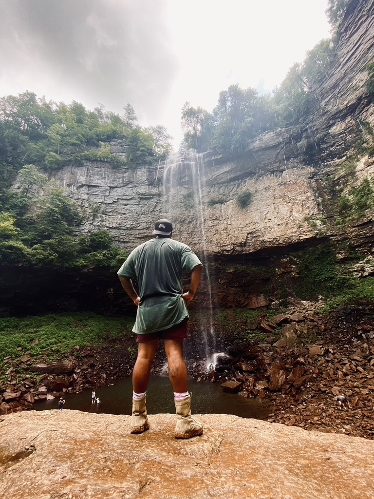

Introduction
- Personal Background: I like my privacy. Traveling the world.
- Academic Background: Learning.
- Background in this Subject: Decking out my Myspace profile back in the day.
- Primary Computer Platform: MacOS
- Courses I'm Taking & Why:
- WEB250 - Database Driven Websites: to learn more about database driven web dev.
- CSC221 - Advanced Python Programming: to learn more about Python
- WEB215 - Advanced Markup & Scripting: to learn more about web dev tools.
- Funny/Interesting Item About Yourself: I’ve traveled a lot around the world, always on the move.